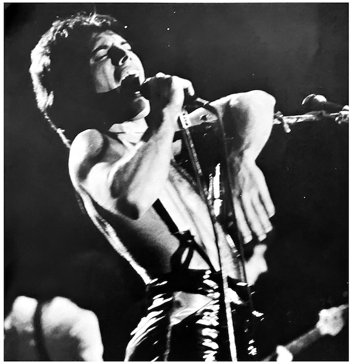
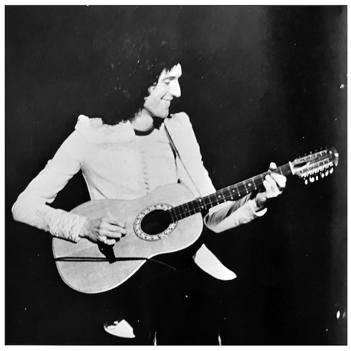
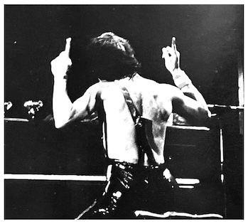

1978 European Tour Report

After the show in Copenhagen, EMI hosted a dinner for the band, during which the managing director of EMI Denmark presented them with a silver disc for A Night at the Opera. From there they flew to Brussels and played to more packed venues. However, something nerve-wracking happened—as planned, the crown slowly started rising at the start of the show, but it suddenly fell off-balance, tilting with one side raised higher than the other. The crown was raised by four switches, which were supposed to operate together, but one got stuck and only one side of the crown went up. Unbeknownst to the audience, Queen was utterly shocked, but they decided to start over. The crown eventually rose completely, Freddie burst out, and the opening number, We Will Rock You, began.
After the second show in Brussels, a press conference was held with major Belgian newspapers. Queen received more awards from the managing director of EMI Belgium. The albums A Night at the Opera, A Day at the Races, and News of the World were best-sellers. There was such a strong demand for tickets in Belgium that Queen changed their schedule and added an extra show after their Rotterdam concert. The Forest Nationale is the largest hall in Belgium, and it's said that this was the first time it had ever been filled to capacity three nights in a row. The promotion for the Brussels shows were organized locally, even using a large robot. This robot attracted attention at the Antwerp Mardi Gras Carnivale, where the fanmade robot rode on the back of a car. Then the promoter loaded it onto the back of a trailer and drove it through the streets before the Queen concert. But the little robot was dwarfed by the enthusiasm of the fans!
When Queen went to Rotterdam, EMI had made welcome preparations by flying a plane over their hotel trailing a banner that read "EMI WELCOMES QUEEN!". Of course, this looked cool, but the result was that when the band left the hotel, they were surrounded by fans.
Performing in the Netherlands is always a pleasure for Queen, and the receptions there are always lavish. At a big party after one of the shows, Queen received a platinum disc for News of the World. A Night at the Opera had also gone double platinum, and Queen topped seven categories in the Dutch magazine "Hit Krant".

Next was Paris on April 23rd and 24th. This was Queen's first time performing in France, where We Are the Champions and News of the World are extraordinarily popular, which led to more sold out shows. Unfortunately, police were restricting entry due to a previous crowd accident involving a different band at the Pavillion. But since tickets had already been sold beyond this occupancy restriction, and no accidents occured on the first night, the powers that be agreed to ease the restrictions on the second night. After the show, Queen received their first gold disc in France for News of the World, which topped the charts there. The band enjoyed more shopping and sightseeing in Paris before heading off to Dortmund.
On April 28th, Queen flew to Berlin for their first-ever concert there, where they received a hero's welcome from their fans. After that show, the promoter took them to a world famous club where a play that parodied the critically-acclaimed Bohemian Rhapsody was being put on. Before leaving Berlin, Brian and Roger satisfied their curiosities by taking a trip across the border into East Berlin.
After Berlin was Zurich, where EMI threw yet another party for them after the show, which was attended by lucky fans who had won various radio station contests. All the Queen members were overwhelmed by the beauty of the Swiss countryside, and Brian, Roger, and John hiked a mountain to take in the breathtaking views.
Queen performed in Vienna for the first time on May 2nd. The Daily Mirror Pop Club held a competition with the winner receiving a chance to see the band perform there. The prize also included a meet-and-greet.

Queen returned to England to perform the first of five UK shows at New Bingley Hall in Stafford. The atmosphere in Stafford is usually a little staid, but this year was different. Brian and Freddie rearranged Love of my Life for an acoustic set, and when Freddie stopped singing the audience was spellbound, and Freddie was able to experience the audience's rapt singing.
The tour culminated in three sold-out nights at the Empire Pool in Wembley. Every show was incredibly powerful, and on the final night, they changed the encore to We Are the Champions, a fitting conclusion to this wildly successful tour.
After Saturday's concert, EMI threw another party to celebrate the end of the tour. That night, Queen received silver and gold discs for News of the World and We Are the Champions. The Daily Mirror Pop Club also awarded them "Best Rock Group of 1977".